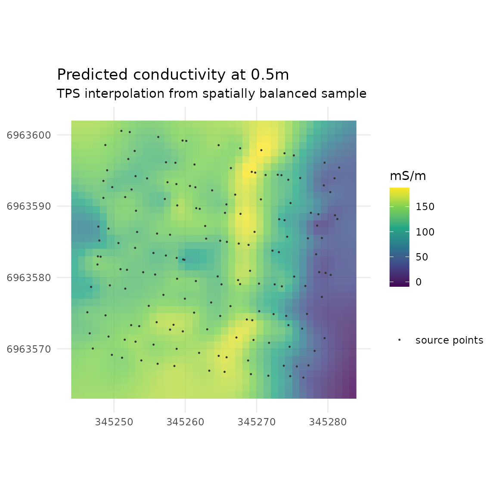
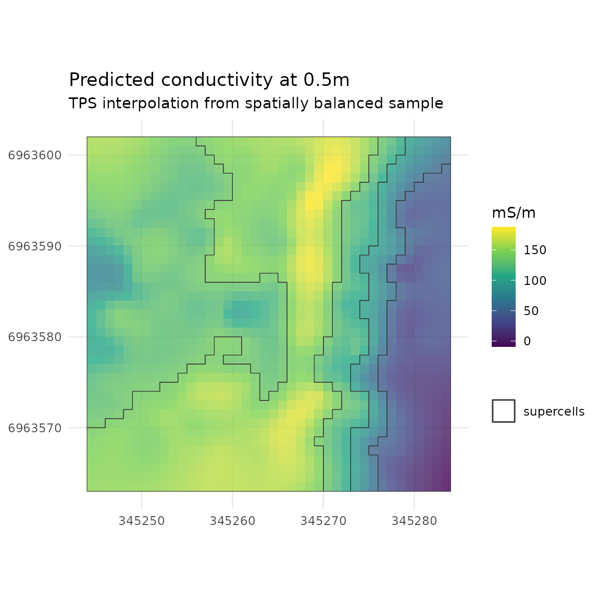

Introduction to em38
@obrl_soil
2023-09-24
Using_em38.Rmd
library(em38)
library(sf)
library(dplyr)
library(tidyr)
library(ggplot2)
options(stringsAsFactors = FALSE)General Information
em38 offers an R-based alternative to the ‘DAT38MK2’ software that
accompanies the Geonics
EM38-MKII Ground Conductivity meter. The package can take in the
*.n38 binary files produced by the device and its accompanying
datalogger and either produce an sf-style point dataset or
a replicate of the *.m38 plain-text logfile. The package also contains
intermediate functions that step through the process of decoding the
*.n38 binary files, hopefully demystifying the process somewhat.
This package allows users to incorporate EM38-MKII data into a fully reproducible workflow, and also makes it possible for non-Windows users to easily work with an EM38-MKII.
Usage
em38 requires only an *.n38 file as input, and can
complete a one-line conversion with em38_from_file(). This
will return a list containing the file header information, plus a
processed list of survey lines. If GPS data is available for a survey
line dataset, it will have sfc_POINT geometry and can be
written to file using a vector spatial file format like GeoPackage. If
no GPS data is available, the data can be written to *.csv.
demo_survey <-
em38_from_file(path = system.file("extdata", "em38_demo.N38",
package = "em38"),
hdop_filter = 3)
sl1 <- demo_survey$survey_lines[[1]]
ggplot(st_transform(sl1, 28356)) +
geom_sf(aes(fill = cond_05), pch = 21, size = 2, stroke = NA, alpha = 0.8) +
scale_fill_viridis_c() +
labs(fill = 'ECa mS/m') +
ggtitle('EM38-MKII Conductivity',
subtitle = 'Vertical Dipole Mode, Coil Separation 0.5m') +
theme_minimal() +
coord_sf(datum = 28356)
head(sf::st_set_geometry(sl1, NULL)[, c('ID', 'cond_05', 'date_time')])
#> ID cond_05 date_time
#> 1 1 146.9004 2018-03-16 13:00:23
#> 2 2 144.0879 2018-03-16 13:00:23
#> 3 3 146.0801 2018-03-16 13:00:23
#> 4 4 143.4239 2018-03-16 13:00:23
#> 5 5 138.8536 2018-03-16 13:00:23
#> 6 6 139.3614 2018-03-16 13:00:24For context, the above readings were taken over a ~34 x 37m area of mostly fallow bare ground, except for the eastern edge where a crop was present. The stripe of high values coincides with a vehicle track.
Visualisation
If you want to visualise your decoded track data in R the same way
DAT38MK2 does, some recipes follow using ggplot2.
Firstly, a basic graph of all the data. Drop the geometry, condense the dataset into two columns, and then plot with appropriate data grouping settings:
dat <- sf::st_set_geometry(sl1, NULL) %>%
dplyr::select(-indicator, -marker, -date_time) %>%
tidyr::gather('key', 'value', -ID, -mode) %>%
tidyr::unite('key', mode, key)
ggplot(dplyr::filter(dat, between(ID, 0, 500))) +
geom_path(aes(x = ID, y = value, group = key, col = key), linewidth = 1) +
ggtitle("EM38-MKII",
subtitle = 'Vertical channels, First 100 records') +
labs(col = 'Channel') +
theme_minimal() 
Since the various readings are on very different scales, it is preferable to facet the plot. Below, an additional ‘measurement type’ grouping variable is added before plotting, and used to split the data into separate panels.
# better grouping - split out by measurement type
dat <- dat %>%
dplyr::mutate(TYPE =
dplyr::case_when(grepl('cond', key) ~ 'Conductivity (mS/m)',
grepl('IP', key) ~ 'In Phase (mS/m)',
grepl('temp', key) ~ 'Temperature (C)',
grepl('elevation', key) ~ 'Elevation (m)'),
TYPE = factor(TYPE,
levels = c('Conductivity (mS/m)', 'In Phase (mS/m)',
'Temperature (C)', 'Elevation (m)'),
ordered = TRUE))
ggplot(dplyr::filter(dat, ID <= 500) %>% dplyr::filter(TYPE != 'INPHASE')) +
geom_path(aes(x = ID, y = value, group = key, col = key), linewidth = 1) +
facet_wrap(~TYPE, scales = 'free_y', nrow = 4) +
ggtitle("EM38-MKII",
subtitle = 'Vertical channels, First 500 records') +
labs(col = 'Channel') +
theme_minimal() +
theme(axis.title = element_blank())
If you want more control over plot aesthetics, patchwork
is helpful:
# devtools::install_github("thomasp85/patchwork")
library(patchwork)
# common plot aesthetics
thm <- theme_minimal() +
theme(legend.position = 'bottom',
legend.title = element_blank(),
axis.title.x = element_blank())
cond <- ggplot(dplyr::filter(dat, ID <= 500) %>%
dplyr::filter(TYPE == 'Conductivity (mS/m)')) +
geom_path(aes(x = ID, y = value, group = key, col = key), linewidth = 1) +
scale_y_continuous(limits = c(0, 250)) +
labs(y = 'ECa mS/m') +
thm
temp <- ggplot(dplyr::filter(dat, ID <= 500) %>%
dplyr::filter(TYPE == 'Temperature (C)')) +
geom_path(aes(x = ID, y = value, group = key, col = key), linewidth = 1) +
scale_y_continuous(limits = c(33, 36)) +
labs(y = 'Temperature (C)') +
thm
cond + temp +
plot_annotation(title = 'Decoded track, first 500 records') +
plot_layout(nrow = 2)
Spatial interpolation
The raw track of points is generally less useful than a continuous surface of values interpolated from the recorded points.
A very quick and dumb polygon-based interpolation can be made simply by spatially binning the data with a large enough bin size to fill any (or in this case, most) gaps.
library(h3jsr)
sl1$H3_res14 <- point_to_cell(sl1, res = 14)
sl_hex14 <- group_by(sl1, H3_res14) |>
summarise(mean_cond_05 = mean(cond_05, na.rm = TRUE),
sd_cond_05 = sd(cond_05, na.rm = TRUE),
min_cond_05 = min(cond_05, na.rm = TRUE),
max_cond_05 = max(cond_05, na.rm = TRUE),
N_cond_05 = sum(!is.na(cond_05))) |>
mutate(geometry = cell_to_polygon(H3_res14))
ggplot(sl_hex14) +
geom_sf(aes(fill = mean_cond_05), alpha = 0.8) +
scale_fill_viridis_c() +
labs(fill = 'ECa mS/m') +
ggtitle('Binned mean conductivity at 0.5m',
subtitle = 'H3 resolution 14') +
theme_minimal() +
coord_sf(datum = 28356)However, more sophisticated approaches are vastly preferable. A quick demo using the mean data values generated above:
library(terra)
library(fields)
# should be working in projected coordinates for this, so
sl_hex14_utm <- st_transform(sl_hex14, 28356)
# generate an empty grid to predict over - 1m cells
grid_1m <- terra::rast(round(ext(st_bbox(sl_hex14_utm))),
resolution = 1, crs = 'EPSG:28356')
# NB TPS is slow in R with large n; more than a few hundred points will have
# you waiting hours
sl1_tps <- fields::Tps(st_coordinates(st_centroid(sl_hex14_utm)),
sl_hex14_utm$mean_cond_05,
lon.lat = FALSE, miles = FALSE)
# predict onto grid
cond_05_tps <- terra::interpolate(grid_1m, sl1_tps)
cond_05_tps_df <- as.data.frame(cond_05_tps, xy = TRUE)
ggplot(cond_05_tps_df) +
geom_raster(aes(x = x ,y = y, fill = lyr.1), alpha = 0.8) +
geom_sf(data = st_centroid(sl_hex14_utm), aes(colour = 'source points'),
pch = 20, size = 0.5, show.legend = 'point') +
scale_fill_viridis_c() +
scale_colour_manual(values = 'grey20') +
ggtitle('Predicted conductivity at 0.5m',
subtitle = 'TPS interpolation from mean of H3 resolution 14') +
labs(fill = 'mS/m', col = '') +
theme_minimal() +
theme(axis.title = element_blank()) +
coord_sf(datum = 28356)One could also subsample the raw data. Below, a spatially balanced subsample is selected by leveraging the hex indexing obtained previously:
sl1_utm <- st_transform(sl1, 28356)
sl1_utm_sample <- sl1_utm |>
group_by(H3_res14) |>
slice_sample(n = 1) |>
ungroup()
# the non-spatially balanced option would be something like
# sl1_utm_sample <- dplyr::slice_sample(sl1_utm, prop = 0.05)
sl1_tps_b <- fields::Tps(st_coordinates(sl1_utm_sample),
sl1_utm_sample$cond_05,
lon.lat = FALSE, miles = FALSE)
#> Warning:
#> Grid searches over lambda (nugget and sill variances) with minima at the endpoints:
#> (GCV) Generalized Cross-Validation
#> minimum at right endpoint lambda = 5.43543e-06 (eff. df= 158.65 )
cond_05_tps_b <- terra::interpolate(grid_1m, sl1_tps_b)
cond_05_tps_b_df <- as.data.frame(cond_05_tps_b, xy = TRUE)
ggplot(cond_05_tps_b_df) +
geom_raster(aes(x = x ,y = y, fill = lyr.1), alpha = 0.8) +
geom_sf(data = sl1_utm_sample, aes(colour = 'source points'), pch = 20,
size = 0.5, show.legend = 'point') +
scale_fill_viridis_c() +
scale_colour_manual(values = 'grey20') +
ggtitle('Predicted conductivity at 0.5m',
subtitle = 'TPS interpolation from spatially balanced sample') +
labs(fill = 'mS/m', col = '') +
theme_minimal() +
theme(axis.title = element_blank()) +
coord_sf(datum = 28356)
Zoning
The supercells package can be used to help generate
zones from interpolated surfaces.
library(supercells)
tps_ss <- supercells(cond_05_tps_b, k = 3, compactness = 0.1)
ggplot(cond_05_tps_b_df) +
geom_raster(aes(x = x ,y = y, fill = lyr.1), alpha = 0.8) +
geom_sf(data = tps_ss, aes(colour = 'supercells'), pch = 20,
size = 0.5, show.legend = 'lines', fill = NA) +
scale_fill_viridis_c() +
scale_colour_manual(values = 'grey20') +
ggtitle('Predicted conductivity at 0.5m',
subtitle = 'TPS interpolation from spatially balanced sample') +
labs(fill = 'mS/m', col = '') +
theme_minimal() +
theme(axis.title = element_blank()) +
coord_sf(datum = 28356)